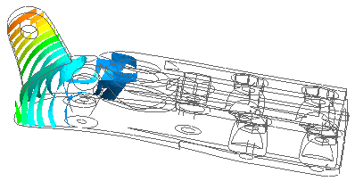

A post view represents results displayed on the model in the graphics window. A post view represents results using a contour or marker display, and includes the result type and data component, cutting plane settings, deformation, and so on.
You can create multiple post views and overlay them or display them in multiple viewports.
You can save post view settings as templates and apply them to the current post view.
